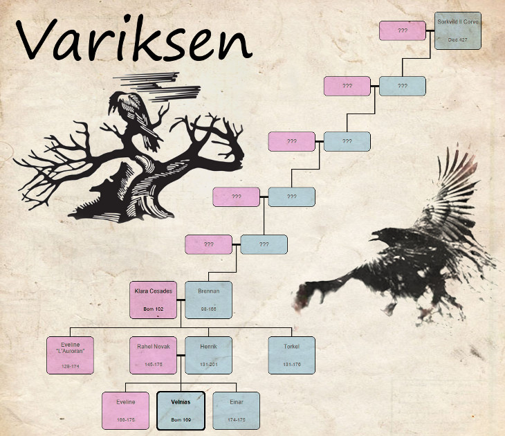
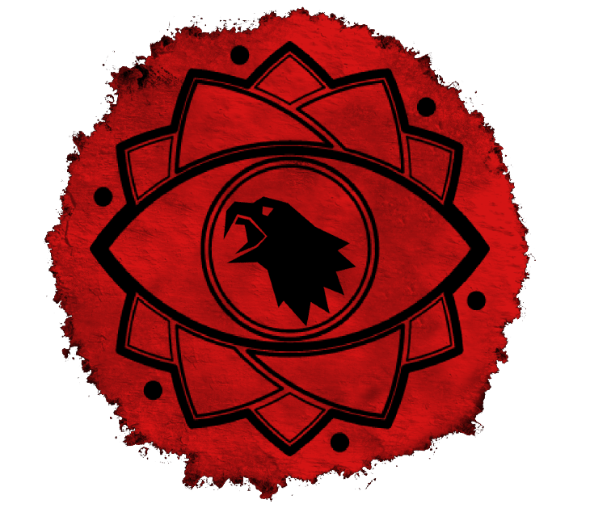

Background
Cacciatore, Mago, Storico e Archeologo di Skyrim, fondatore dell'Ordine di Samhain.
Timeline
3E 427
Sorkvild Il Corvo, un necromante Nord di Dagon Fel (Morrowind settentrionale), muore per mano del Nerevarine.
3E 428
Le "mogli" di Sorkvild vengono ripudiate dai cittadini di Dagon Fel. Alcune ricorrono alla magia per abortire, altre decidono di crescere i loro figli dandosi ad una sorta di "nomadismo collettivo".
3E 433
L'ultimo anno della terza era. Durante la Crisi dell'Oblivion le mogli di Sorkvild sopravvissute si stabiliscono a Solstheim con la prole. Vengono considerate delle streghe, probabilmente già identificate con il nome Variksen (I Corvi, o la gente del Corvo nel dialetto Nord locale). Le donne praticano diversi culti daedrici, spesso tra loro contrapposti, e per questo si genereranno diversi scontri interni alla comunità.
4E 5
L'Anno Rosso, la caduta di Baar Dau e l'eruzione del vulcano di Vvardenfell: Solstheim diventa una colonia per i Dunmer rifugiati, i Variksen superstiti si mischiano con la nuova popolazione locale (prevalentemente Nord e Dunmer, con una buona presenza Imperiale).
4E 98
Brennan Variksen nasce a Blacklight (Morrowind settentrionale), all'inzio dei due anni senza luna (le Notti Vuote), Sokvild è il suo trisnonno. Poco è noto riguardo i suoi genitori, ma è probabile che Brennan avesse qualche origine Dunmer, nonostante l'aspetto tipicamente Nord.
4E 117
Dopo una breve gavetta, Brennan diviene il giovanissimo capitano della Nuova Marie Elena, una nave mercantile dell'Impero.
4E 125
Brennan sposa Klara Cosades, una mezza-Dunmer di origini Imperiali (da qualche anno Primo Ufficiale della sua ciurma).
4E 129
Nasce in pieno mare aperto Eveline Variksen, prima figlia di Brennan. Nonostante questo, la famiglia continua a spostarsi in lungo e in largo tra le varie città portuali del Mare dei Fantasmi.
4E 131
Nascono a Dawnstar i due gemelli Torkel ed Henrik Variksen. Brennan e Klara decidono di abbandonare la vita da marinai e si stabiliscono nel Pale, dedicandosi alla caccia e alla pesca.
4E 144
Eveline scappa di casa e s'imbarca clandestinamente per la Città Imperiale, Klara parte immediatamente alla sua ricerca. Brennan ed i due gemelli si trasferiscono nel feudo di Falkreath, verso i boschi meridionali di Skyrim (più precisamente nei dintorni di Helgen).
4E 147
Torkel parte per Windhelm e diventa un soldato di ventura, mentre Henrik perfeziona ulteriormente le sue doti di cacciatore seguendo l'esempio del padre.
4E 149
Klara ritrova finalmente Eveline in una gilda di Sentinel (Hammerfell). Madre e figlia si affrontano in combattimento: Klara ha la meglio, ma lascia Eveline al suo destino. Da quel giorno, non si hanno più notizie di Klara Cosades.
4E 156
Dopo parecchie avventure per la Tamriel occidentale, Eveline decide di arruolarsi nella Legione Imperiale di Wayrest (High Rock).
4E 163
Henrik sposa Rahel Novak, una Bretone originaria di Corinto (Elsweyr) da poco giunta a Skyrim seguendo una carovana Khajiit.
4E 166
Brennan Variksen muore dopo una lunga lotta con la Febbre Rossa. Al suo capezzale c'è solo Henrik, che eseguirà le sue ultime volontà spargendone le ceneri nel Mare dei Fantasmi. Qualche mese dopo, nasce a Falkreath Eveline Variksen Seconda, detta "Evy", prima figlia di Henrik e Rahel.
4E 169
In una piccola baita poco lontano da Helgen (nel feudo di Falkreath) nasce Velnias Variksen, secondo figlio di Henrik e Rahel.
4E 174
Eveline Variksen I, soprannominata "L'Auroran" per il valore in battaglia e la sua armatura dorata, muore nella Città Imperiale durante l'assedio Aldmeri. Nell'estate dello stesso anno nasce Einar Variksen, terzo figlio di Henrik e Rahel.
4E 175
Rahel e i piccoli Eveline ed Einar muoiono a seguito del naufragio della Velsignet, una nave di Solitude diretta a Shornhelm. Henrik e Velnias sono tra i pochi superstiti.
4E 176
Torkel viene conquistato dagli ideali del giovane Ulfric Manto della Tempesta, ripudia l'Impero e lo segue nella presa del Reach. Morirà a causa di una ferita velenosa riportata durante lo scontro con i Rinnegati di Markarth.
4E 179
Velnias scopre di essere naturalmente in grado di lanciare alcuni basilari incantesimi, Henrik non ne è entusiasta, ma attribuisce le capacità del figlio al sangue Bretone ereditato dalla madre, e lo incoraggia a servirsene per migliorare le sue doti di cacciatore.
4E 183
Velnias, durante una solitaria battuta di caccia nel Passo di Brittleshin, sconfigge alcuni necromanti e, recuperando un loro grimorio, scopre accidentalmente il suo talento innato per la necromanzia.
4E 185
Sempre sotto la tutela del padre, Velnias prosegue una vita dedita alla caccia. I due vivono senza fissa dimora, commerciando selvaggina con le genti del Falkreath e scontrandosi occasionalmente con banditi e tagliagole.
4E 186
Il giovane Velnias è divenuto un avido lettore, e alterna le battute di caccia a vari studi e ricerche sulla storia di Tamriel e dei Variksen. In questo periodo, abbandona la tutela del padre Henrik dandosi al nomadismo in solitudine.
4E 187
Velnias, sfruttando le carovane Khajiiti come insolito "editore", pubblica dietro lo pseudonimo di Pragaras il suo primo libro: "Tumuli di Skyrim - Guida di Sopravvivenza" che in principio ottiene un discreto successo (principalmente tra le popolazioni straniere della Provincia), tuttavia i sacerdoti di Arkay lo ritengono una "blasfema propaganda per predatori di tombe" e ne bloccano rapidamente la diffusione.
4E 188
Velnias pubblica dietro lo pseudonimo di Pragaras il suo secondo libro: "Mede: La Decadenza di un Impero", censurato quasi immediatamente dalle forze Imperiali e Aldmeri. Nonostante la limitata diffusione, si dice abbia influenzato le future prese di posizione di Ulfric Manto della Tempesta e inciso nella Rivolta di Bravil accaduta nello stesso anno (sebbene le cronache più attendibili attribuiscano i motivi di quest'ultima ad uno scontro tra i due sindacati criminali dediti al traffico di skooma nella città).
4E 189
A inizio anno Velnias è ormai un affermato cacciatore di taglie, oltre che di animali: gode infatti di una certa fama tra i feudi di Whiterun (dove risiede per qualche tempo) e Falkreath. Durante quest'anno recupera la Maschera di Clavicus Vile (in passato appartenuta al trisavolo Sorkvild) ed effettua il pellegrinaggio a Hrothgar Alto, imparando dai Barbagrigia i rudimenti del Thu'um.
4E 190
Dopo averne discusso con Henrik, finalmente Velnias decide di approfondire i suoi studi magici ed entra a far parte dell'Accademia di Winterhold come studente. Conseguentemente, alimenta il suo amore per l'archeologia contribuendo agli scavi di Saarthal
4E 193
Alla fine del suo apprendistato Velnias è ormai conosciuto come uno dei giovani maghi più abili e potenti di Wintehrold: è particolarmente apprezzato dai Maestri Tolfdir, Phinis e Faralda, oltre che dall'Arcimago Savos Aren in persona.
4E 194
Per sostentare i suoi viaggi e studi archeologici, Velnias ritorna occasionalmente al lavoro di mercenario e, durante un incarico commissionato da un mercante di Solitude, entra accidentalmente in possesso del vascello Northern Cardinal: come suo nonno Brennan prima di lui, decide di tentare la sorte come marinaio nel Mare dei Fantasmi.
4E 195
Un anno dopo, Velnias viene arrestato dalle guardie di Whiterun, accusato di aver aggredito alcuni Thalmor. Dopo essere riuscito ad evadere, acquista un piccolo apezzamento di terra nei pressi del Lago Ilinalta nel feudo di Falkreath, dove si costruisce una nuova casa. In questo periodo entra in possesso di Frangialba, la spada simbolo di Meridia
4E 196
In seguito alla morte di Savos Aren, Velnias viene richiamato a Wintherold e visto da molti come il nuovo probabile arcimago, tuttavia Velnias stesso caldeggiò per l'elezione di Tolfdir, che in cambio gli consentirà di agire con autorità pressoché assoluta per tutta l'Accademia. Durante l'anno, di tanto in tanto Velnias insegna Evocazione e Distruzione agli allievi
4E 201 Ultima Semina
Henrik Variksen muore durante la distruzione di Helgen da parte di Alduin. Da questo momento in poi, Velnias è l'ultimo Variksen vivente noto. Sempre sotto lo pseudonimo di "Pragaras", Velnias pubblicherà il suo terzo libro, "La Guerra Civile dei Burattini", una feroce critica al separatismo dei Manto della Tempesta che identificava i Thalmor come veri "burattinai" della guerra civile di Skyrim.
4E 201 Focolare
Velnias fonda l'Ordine di Samhain, una società segreta volta a terminare la Guerra Civile di Skyrim e contrastare l'influenza dei Thalmor. Originariamente gli incontri tra i membri avvengono nei sotterranei della villa di Velnias, in seguito vedranno nella remota torre di Ravens Nest una vera e propria sede.
4E 201 Gelata
Eventi di Dawnguard
Albero Genealogico
{kind=link}
Note
Non si hanno notizie attendibili antecedenti alla nascita di Brennan Variksen e successive alla morte di Sorkvild:
Durante il primo secolo della Quarta Era i Variksen erano un clan fondamentalmente basato sulla tradizione orale, com'è tipico per le comunità di cultisti daedrici (similarmente alla Congrega di Glenmoril, i Rinnegati del Reach ma anche agli Skaal di Solstheim.)
A quanto sembra i Variksen del passato hanno grossomodo tenuto vivo il loro sangue Nord, con rilevanti eccezioni che includerebbero svariati matrimoni con Imperiali, Dunmer e (più sporadicamente) Bretoni.
Le motivazioni sono abbastanza semplici: nonostante il nomadismo, il grosso del Clan sembra aver vissuto prevalentemente nelle aree nordorientali di Tamriel.
Questo è anche dovuto al fatto che, generalmente, i Variksen più intraprendenti e girovaghi in media difficilmente hanno messo su famiglia (o lasciato qualche documento scritto a riguardo)
Ordine di Samhain
Background
L'Ordine di Samhain fu una società segreta fondata da Velnias Variksen nel 4E 201.
I suoi primi due membri, oltre a Velnias stesso, furono Faralda (una strega Altmer, insegnante di magia di Winterhold) e Brunwulf Libero-Inverno (un guerriero Nord di Windhelm, veterano della Grande Guerra)
Nome
Pare che Samhain sia un termine dialettale di alcune zone del Reach per indicare la fine dell'estate, periodo in cui l'Ordine fu fondato.
Alcuni pensano che la partcolare scelta etimologica del nome testimoniasse una sorta di alleanza tra l'Ordine e i Rinnegati del Reach.
Simboli
Il classico simbolo dell'Ordine è costituito da un Occhio Arcano, con un corvo al posto della pupilla.
Il Corvo è da sempre una sorta di araldo di famiglia per i Variksen, mentre l'Occhio Arcano rappresenta il leggendario Occhio di Magnus, oltre che un generico simbolo legato alla magia, alla conoscenza e alla vigilanza.
Motti
Due, in antico Cyrodillico:
Parcere subiectis et debellare superbos (Risparmiare i sottomessi e abbattere i superbi)
Veritas filia temporis (La verità è figlia del tempo)
I due motti furono spesso utilizzati come firma per vari messaggi in codice.
Sede
La Torre di Ravens Nest, situata tra le alture dell'Eastmarch.
La sua locazione è stata a lungo tenuta segreta, e la torre è sempre stata praticamente irraggiungibile per i non iniziati all'Ordine grazie a svariate protezioni magiche, oltre che il sentiero impervio.
Scopi
In origine, L'Ordine nacque con l'intento di porre fine alla Guerra Civile e contrastare la crescente influenza dei Thalmor a Skyrim.
Stando a quanto è noto, Velnias Variksen concepì l'idea dopo una discussione tra Brunwulf e Faralda avvenuta nella sua villa nei pressi del Lago Ilinalta (nel feudo di Falkreath).
(Skyrim in Progress)
...